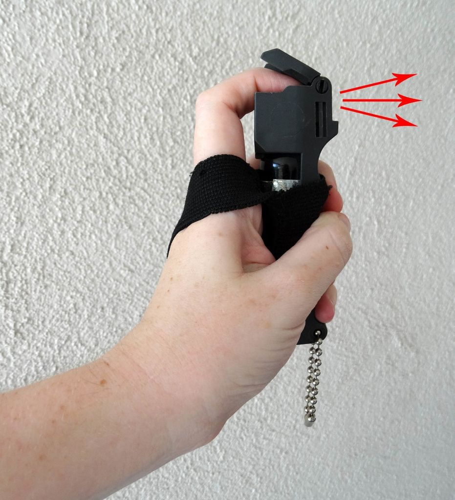
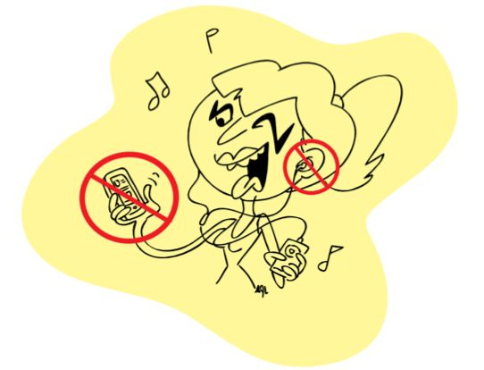
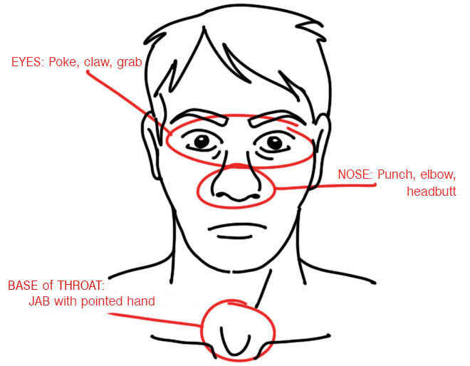
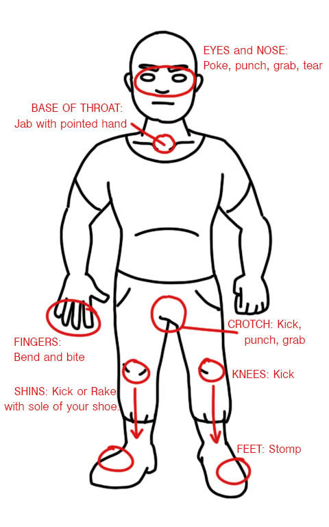
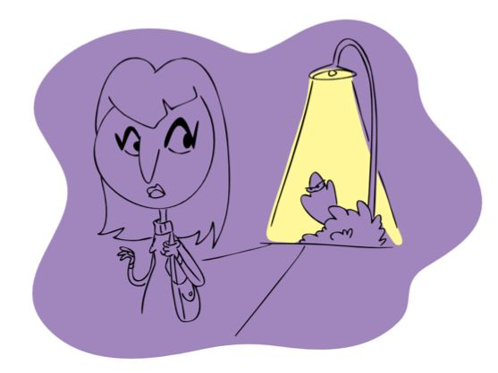
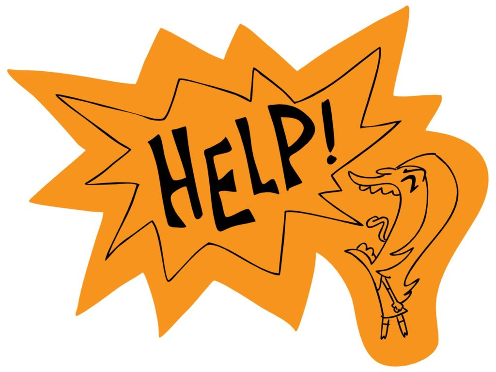
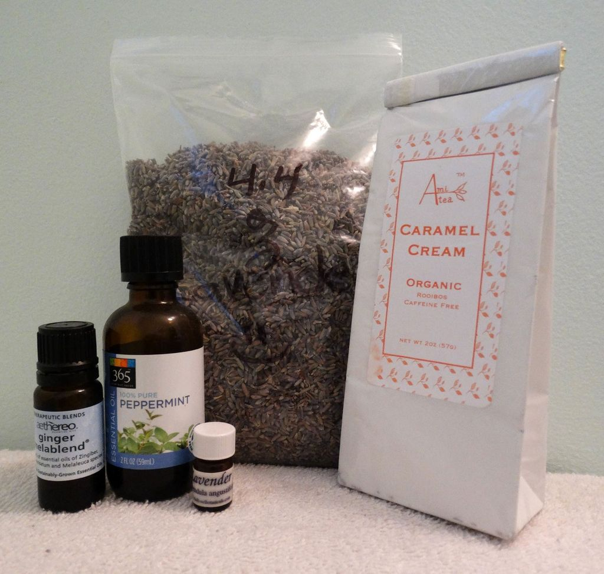
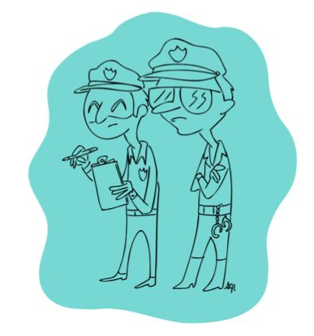

| 1 |
 |
Two items I recommend here are things that I personally carry when walking alone. They are both very safe for the user
and legal to carry in my state. Pepper Spray -- Relatively easy to find at places like hardware stores or sporting goods
stores. Self Defense Keychains -- You put your forefinger and middle finger through the eyes of the plastic cat and hold
your keys in your fist. If you find yourself in a situation where you have to strike out, the firm plastic prongs deliver
a major ouch to your assailant. Again, because it is linked to your hand it is much less likely to get wrestled away from
you or turned against you. *For items like this, check legality in your state. It's plastic, but some places may still
construe it as a weapon.* Spit -- Yes, spit. Your own spit can be used as a self defense tool if you're in a pinch. If you
feel a confrontation is imminent, start conjuring up saliva in your mouth. If the person lunges at you, spit right at them --in
the face if possible. You\'ve just done something really unexpected. The surprise throws your attacker off his game, and maybe
even grosses him out. If you're lucky, he's also distracted wiping spit out of his eyes. This disruption is your opportunity
to RUN and yell for help. If he's smart, he won't pursue you. Leaving your spit also leaves your DNA behind. Should this be
a case where the attacker is arrested and you need to prove he was the one who assaulted you, mention to police that you spit
on him. They may be able to swab the person and retrieve traces, thus proving your account of the events.
|
| 2 |
 |
When walking alone, day or night, it is important to be alert. Don't be distracted. A distracted person is an easy target.
Just put the phone away. Your calls/texts/email/social media can wait 10 more minutes. Messing with your phone means your
eyes, mind, and hands are occupied.Your eyes should be watching where you are going and scanning your surroundings.Being
observant of your surroundings can help you identifypotential problems before you're in the middle of them, and identify
exit routes, safe places to duck into, and allies on the street.Your mind/ears should be free to take in the surroundings too,
primarily sound. If I hadn't been on the phone, I may have heard foot steps approaching behind me. Be aware of footsteps,
rustling bushes, approaching cars, or even arguing voices near by. Being aware is the first step to assessing whether the
situation is a threat to your person
|
| 3 |
 |
Eyes --Gnarl your fingers into a claw hand. Grab, tear, and poke at the assailant's eyes. They will want to get your hands away
from their face and will have to loosen their grip or adjust their hold to do so. This is when you break and run. Nose --
Another place where it really hurts to get hit. If you are not confident in delivering a straight on punch to the nose, try a
forceful upward palm. If your hands are restrained, headbutt and smash the nose. Base of the Throat -- Feel that little dent
between your clavicles? Press it with two fingers. Uncomfortable, yes? This is one of the most effective places to jab an
attacker. With a firm, pointed hand, jab that dent at the base of the throat. Your attacker will be surprised and will be
gasping/ coughing uncontrollably. Use the moment break and run if possible. If they're still holding on, continue to jab, poke,
bite, kick, and scream. Their coughing will be throwing off their ability to hang on to you effectively.
|
| 4 |
 |
Fingers -- Bend them backwards, bite them, stomp on them, etc. Crotch -- It seems cliche but a kick or knee to the crotch
can definitely cause someone enough pain to let you get away. Shins --2 options here. Hard kicks to the shin or rake the
bottom of your shoe down the front of the attacker's shin. Foot stomp -- Stomp with everything you've got. Anything you
can do to throw off your attacker's balance is in your favor. They're unlikely to do a good job of holding on to you if
they're falling over. You're also drawing focus well away from his grasp on you.
|
| 5 |
 |
A good way to test is to cross the street at the next possible junction. If your tailgater follows you across, remain calm and identify
your options. Scan the area for a business you can duck into. If an employee greets you upon entering, do not be afraid to fill them in
on the situation. Calmly and clearly explain that you think you think someone may be following you, and you have come in because you
fear for your safety and need a few minutes of refuge. Again, most people will be understanding and helpful as long as you are calm.
Watch from a window to see what your follower does. Most will just move on, because now you're no longer easy prey. If they linger
outside as if waiting for you to emerge, call someone to come pick you up. The business owner may or may not ask them to leave the
area, depending on how close they are to the private property. Do not leave the safety of the building until you are certain the follower
has gone entirely, or until you have a buddy to escort you where you need to go. As you leave, it may be wise to change direction from
your original walk. A smart assailant could be waiting further down the street, anticipating you will continue the same route.
|
| 6 |
 |
Don't be afraid to be vocal. If someone is following you and making unwanted verbal contact (cat calls, harassment, etc.), make a
scene that turns the discomfort on them, ultimately causing them to leave. This may be especially important if it is night time in a
residential neighborhood. You need to get people looking out their windows or opening doors to see what's up. Stay in a well lit area
so people can see you. Run up to somebody's porch and get under the porch light if you have to. If possible, get into a high visibility,
public location as quickly as possible. Make sure other people can see you and your harasser clearly. Surround yourself with witnesses
and potential allies.
|
| 7 |
 |
During an attack, your adrenaline spikes big time. You may then experience an adrenal defecit in the days that follow.it is expected
to wait while your body recovers If it helps to talk about what happened, find a friend who will listen. There's also no shame in
calling a support hotline if you need an anonymous ear. Don't expect immediate results from your police report. Sometimes they catch
the guy....sometimes not. Inform the neighborhood. Decrease the chances that this will happen to someone else.
|
| 8 |
 |
You have escaped your attacker! Find a secure place and call the police immediately. Always file a report. Even if the attacker did
not succeed in committing violence or sexual assault, if you experienced unwanted physical contact this is an "assault" It may take
a while for police to show up to take your statement. You may feel shaken and emotional. Do not hesitate to call a friend or knock
on a neighbor's door and ask if they can sit with you until police arrive. Be clear when making your report and provide as much detail
as you can. The police will ask you basics like gender, age, race, hair color, approximate height, and build. You may not know the
attacker's actual height, but you can say things like "a little taller than your partner" and they can approximate for the report. Are
there any other unique details you can recall? Think not just about sight, but also smell and sound. Did he smell strongly of anything
in particular? Did he have any kid of accent when speaking? Something like this may set your attacker apart from other people of similar
physical description.
|